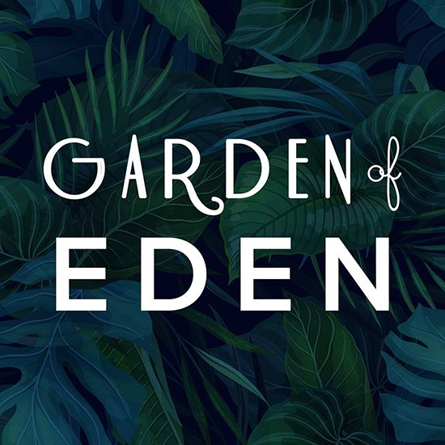
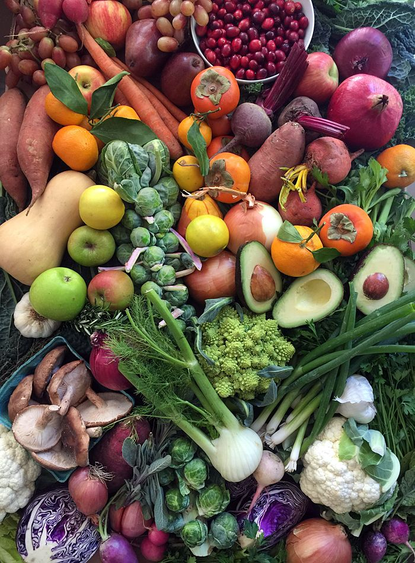

Welcome to Eden's Oasis Shop, your ultimate destination for fresh and organic plants. Whether you're a seasoned gardener or just starting out, we offer a wide variety of plants to beautify your home and garden. From succulents and herbs to flowers and trees, discover the joy of nurturing nature with our top-quality selections.
Eden's Oasis

Best Quality Plants
Welcome to Oasis of Eden, your ultimate destination for discovering the beauty of handmade crafts. We offer a wide range of authentic and unique items, all created with high-quality materials by trusted artisans. Enjoy free shipping on orders over $50 and shop with confidence knowing our products are eco-friendly and sustainable. Our exclusive collections are updated regularly, and we pride ourselves on providing personalized customer service. With secure payment options and fast, reliable delivery, Oasis of Eden is dedicated to bringing you the best online shopping experience. Join our community of happy customers today
Online Plant Booking
Explore the convenience of online plant booking with Oasis of Eden. Our extensive selection of beautiful, healthy plants is just a click away, allowing you to easily browse and choose the perfect greenery for your home or office. Whether you're looking for indoor plants, succulents, or outdoor garden favorites, our user-friendly platform makes it simple to find exactly what you need. Each plant is carefully selected and packaged to ensure it arrives in perfect condition, ready to thrive in your space. Enjoy the benefits of hassle-free delivery, expert plant care tips, and exceptional customer service when you book your plants online with us. Transform your surroundings into a lush oasis with Oasis of Eden's online plant booking service.

Succulents
At Oasis of Eden, we offer a stunning collection of succulents that are perfect for adding a touch of greenery to any space. Succulents are renowned for their unique shapes, vibrant colors, and low-maintenance care, making them ideal for both beginners and experienced plant enthusiasts. These hardy plants thrive in various environments, requiring minimal water and attention while providing maximum beauty. Whether you’re looking to create a stylish indoor garden, enhance your office decor, or give a thoughtful gift, our diverse selection of succulents has something for everyone. Each succulent is carefully chosen for its quality and aesthetic appeal, ensuring you receive only the best. Explore our range and discover the joy of growing succulents with Oasis of Eden.

Herbs
Discover the delightful world of herbs with Oasis of Eden, where we offer a variety of fresh, aromatic herbs perfect for your kitchen garden or windowsill. Our selection includes popular favorites like basil, mint, rosemary, thyme, and many more, each chosen for its quality and culinary versatility. Growing your own herbs not only enhances your cooking with vibrant, homegrown flavors but also adds a touch of greenery to your living space. Herbs are easy to grow and maintain, making them ideal for gardeners of all levels. With our convenient online ordering and careful packaging, your herbs will arrive fresh and ready to thrive. Experience the satisfaction of nurturing your own herbs and elevate your culinary creations with Oasis of Eden's premium herb collection.

Flowers
Discover the enchanting world of flowers at Oasis of Eden, where we bring you a vibrant array of blooms to brighten any occasion. Our carefully curated selection features a variety of fresh, high-quality flowers that are perfect for creating stunning bouquets, elegant arrangements, or charming floral displays. Whether you're celebrating a special event, expressing your feelings, or simply adding a touch of nature's beauty to your home, our flowers are sure to delight. We source our blooms from trusted growers to ensure longevity and freshness, so you can enjoy their exquisite beauty for longer. With convenient online ordering and reliable delivery, bringing the magic of flowers into your life has never been easier. Experience the joy and elegance of flowers with Oasis of Eden.

Vegetables
Discover the freshness and health benefits of growing your own vegetables with Oasis of Eden. Our online shop offers a wide variety of vegetable plants and seeds, perfect for creating a bountiful garden right at home. From juicy tomatoes and crisp lettuce to flavorful herbs and hearty root vegetables, our selection caters to all your culinary needs. Growing your own vegetables not only ensures you have access to fresh, organic produce but also promotes a sustainable lifestyle. Our vegetable plants are carefully selected for their quality and yield, providing you with the best options for a thriving garden. Enjoy the satisfaction of harvesting your own food and the peace of mind that comes with knowing exactly where your produce comes from. Start your gardening journey with Oasis of Eden and savor the flavors of homegrown goodness.

Trees
Discover the elegance and serenity that trees bring to your living space with Oasis of Eden. Our collection of trees encompasses a variety of species, each selected for its beauty, resilience, and ability to thrive in diverse environments. Whether you're looking to create shade in your garden, add privacy to your backyard, or enhance the landscape of your property, our trees offer a natural solution. From flowering trees that brighten your surroundings with seasonal blooms to evergreens that provide year-round greenery, we cater to every preference and landscaping need. Each tree is nurtured for optimal health and growth, ensuring you receive a robust addition to your outdoor sanctuary. Explore our selection and transform your outdoor space into a tranquil oasis with Oasis of Eden.